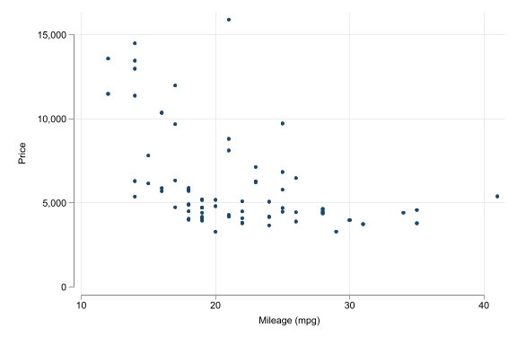
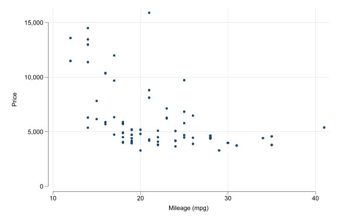

Code
sysuse auto, clear
set scheme white2
scatter price mpg(1978 automobile data)
Welcome, and thanks for joining me.
As you will read in this site, I will cover series of random topics and questions in applied econometrics using my favorite tool Stata!.
That being said. This website is multipurpose.
I started it to answer random questions of “how to” do things in Stata, that I had troubles with at some point. Spread the knowledge if you may. However it will also be used as a teaching tool for some simple and not-so-simple topics and strategies I teach in econometrics class.
Finally, I will also use it as a platform to share my research, whenever possible, and pertinent.
Feel free to drop me a line, comment or question.
Perhaps most interesting of all. This site was rewritten, again, using Quarto! combined with Stata!
You can find me at: friosa@gmail.com
Or follow me on tweeter: @friosavila
And just to start with. A mini Example of what its to come
sysuse auto, clear
set scheme white2
scatter price mpg(1978 automobile data)